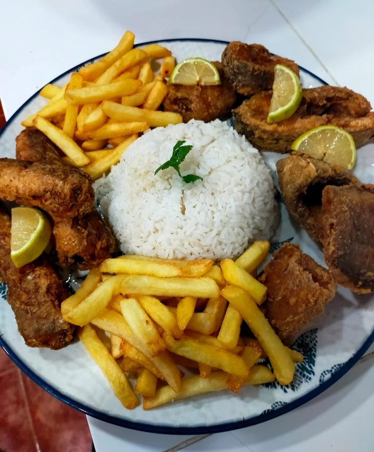
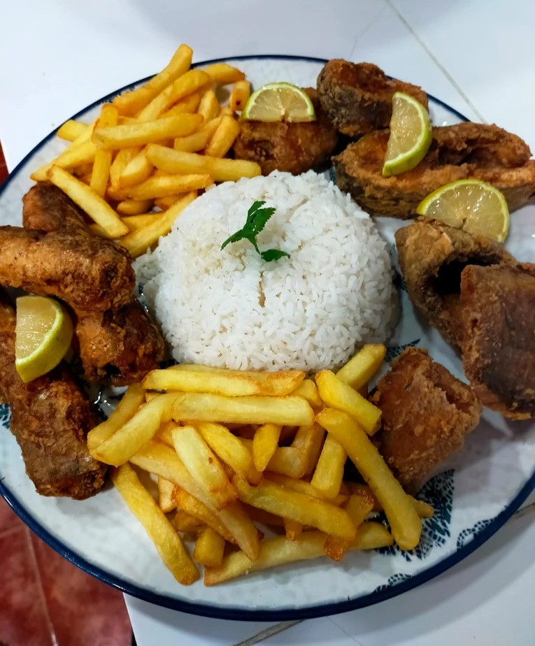
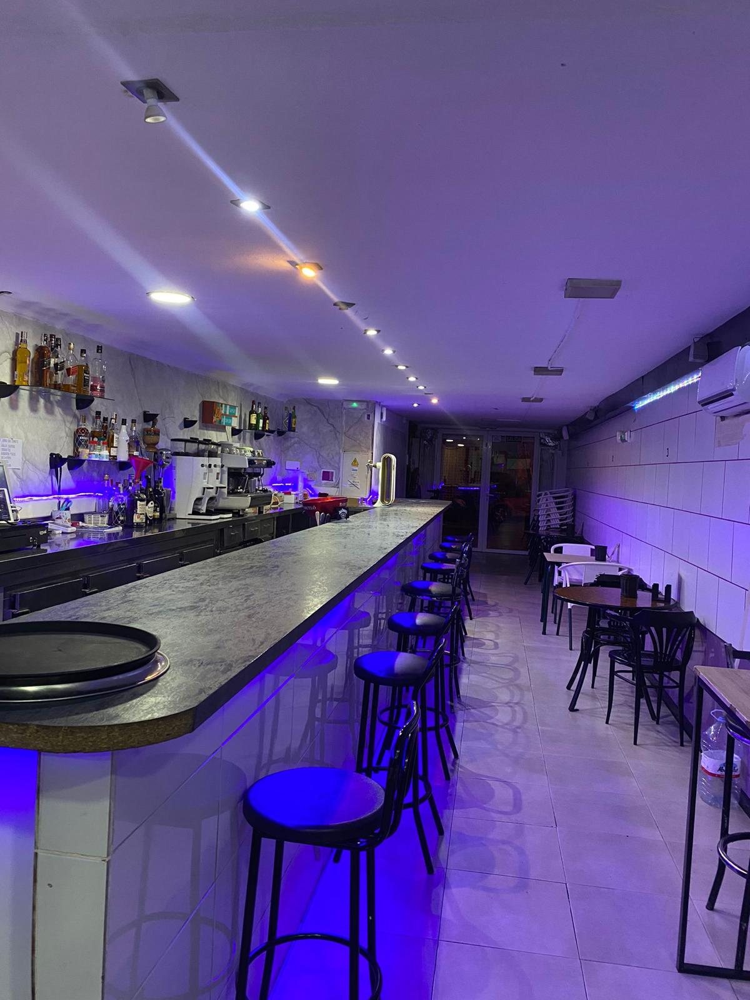
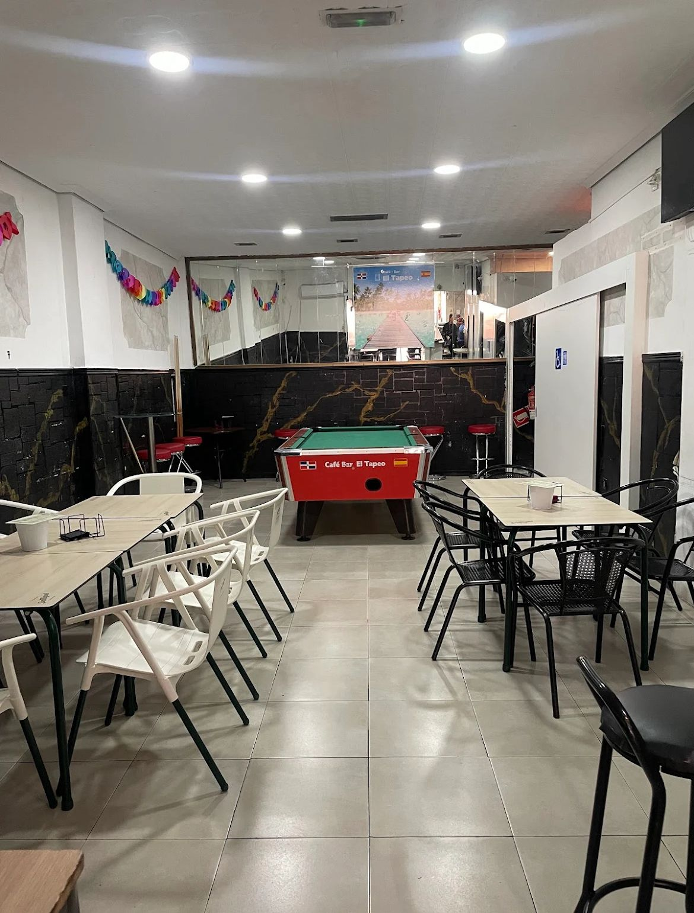
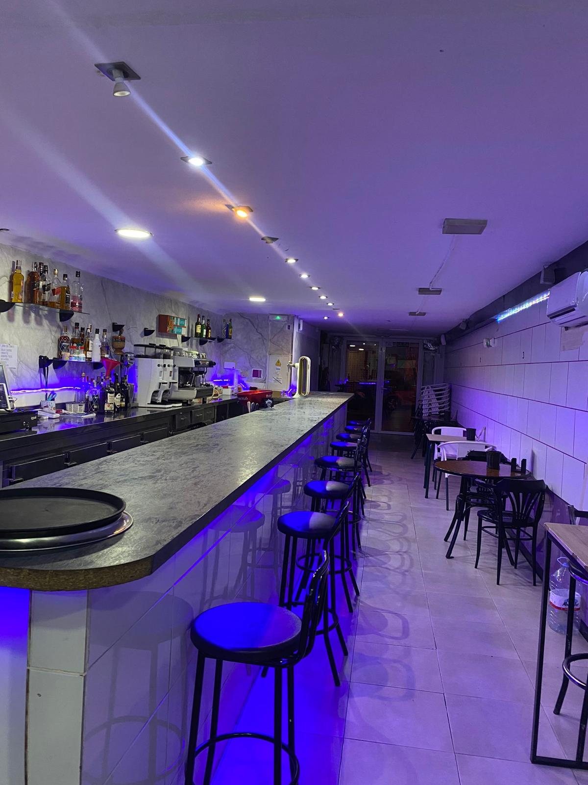
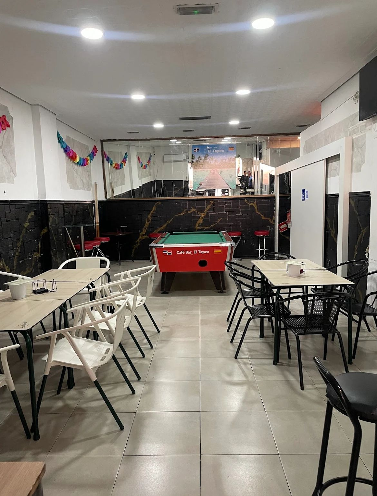
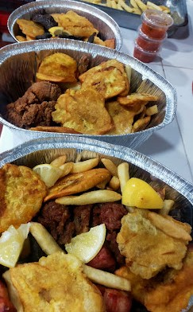
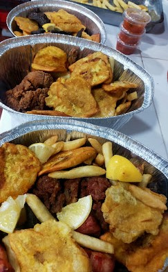
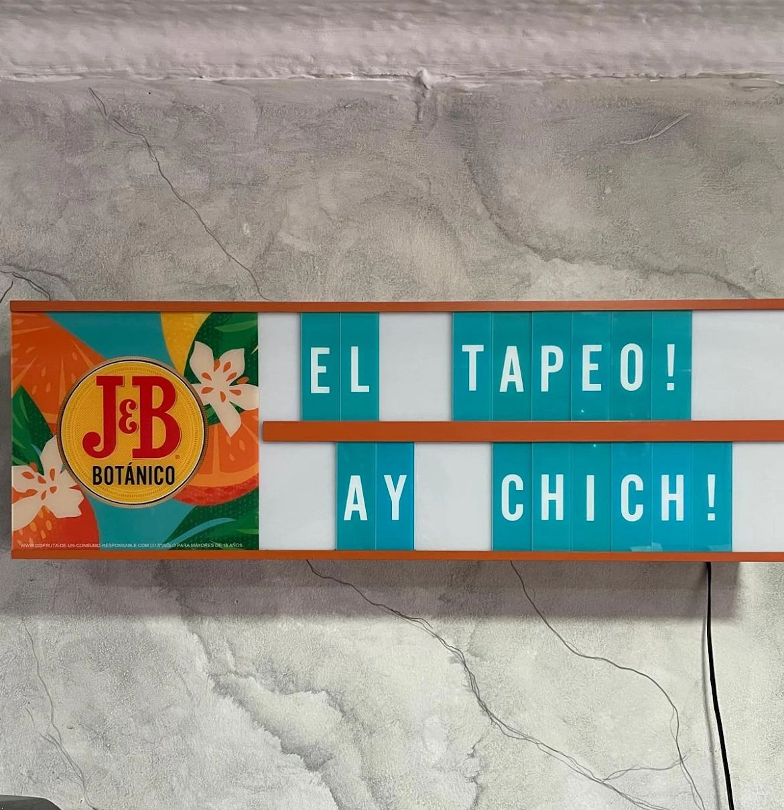
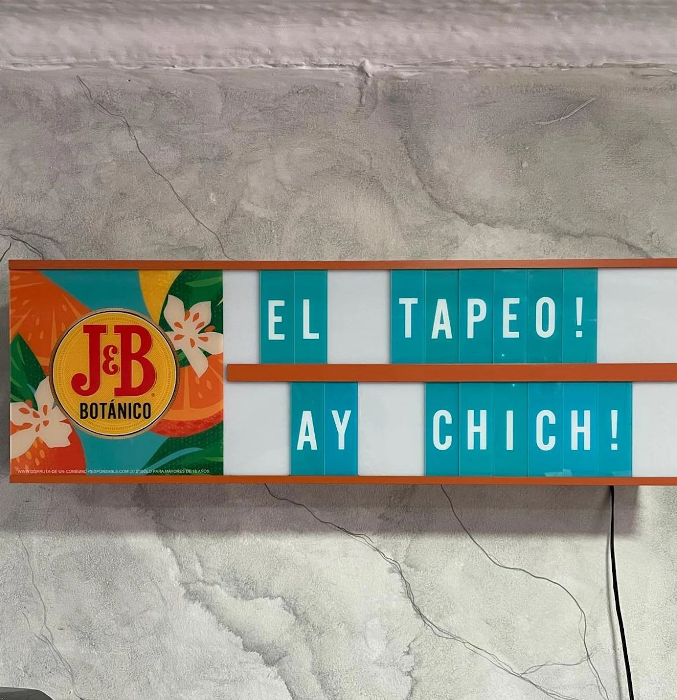

¡Ya puedes encontrarnos en la app de Glovo 🛵🛍️!
¡Haz tu primer pedido!👍🏾
Quiénes somos
Somos dominicanos y llevamos nuestra tierra en el corazón, pero también somos parte de esta España que nos ha dado tantas oportunidades.
Aquí hemos encontrado un segundo hogar, nuevas costumbres, nuevas amistades… y una nueva forma de compartir lo que somos. Nuestro local nace de ese cruce de culturas:
cocinamos con el sazón caribeño que nos acompaña desde siempre, pero también con el gusto por lo español que hemos ido abrazando con el tiempo. Amar lo nuestro no significa cerrar las puertas a lo nuevo, sino todo lo contrario: significa compartirlo.
En cada plato que servimos hay una celebración de ambas tierras. Y no solo Dominicana y España, en nuestro local hay un encuentro de todos los países de hispanoamérica con España.
Dominicanos de corazón, españoles por cariño.
Nuestras especialidades
En cada plato llevamos el auténtico sabor de la cocina dominicana:
recetas caseras, ingredientes frescos y ese toque criollo que nos hace únicos.
Nuestras especialidades rinden homenaje a las tradiciones y al calor del hogar.
Disfruta de los clásicos de siempre:
La bandera con su combinación de arroz, habichuelas y carne; un Picapollo bien sazonado;
o un buen plato de Mangú con los famosos “tres golpes”.
Cada bocado cuenta una historia de sabor, raíces y cultura caribeña.
Sanchoco
El sancocho es una sopa espesa y sabrosa que se considera uno de los platos más emblemáticos del país.
Se prepara con varios tipos de carnes (res, cerdo, pollo, chivo), junto con tubérculos y vegetales.

Mangú
El mangú es un plato tradicional dominicano hecho a base de plátanos verdes
y luego majados con un poco de agua de cocción y aceite o mantequilla.
Suele servirse acompañado de los “tres golpes”.
La Bandera
La bandera es el almuerzo más típico del dominicano y se llama así porque representa los colores de la bandera nacional.
Suele acompañarse con aguacate, ensalada verde o fritos maduros.
Es un plato simple pero completo, base de la dieta diaria en muchos hogares dominicanos.
Picapollo
El Picapollo es muy popular como comida rápida o callejera. Se trata de trozos de pollo sazonados intensamente (con ajo, orégano, sal, etc.) que luego se empanan y se fríen hasta quedar bien crujientes.
Galería


 



 



 



 

Contacto
Dirección
C. Ángel Ochotorena, 4, 04005 Almería
Teléfonos 📞
+34 602 51 27 99
+34 632 52 31 48
Horarios 📅
| Lunes | Martes | Miércoles | Jueves | Viernes | Sábado | Domingo |
|---|---|---|---|---|---|---|
| 12:00 - 02:00 | 12:00 - 02:00 | CERRADO | 12:00 - 02:00 | 12:00 - 02:00 | 12:00 - 02:00 | 12:00 - 02:00 |